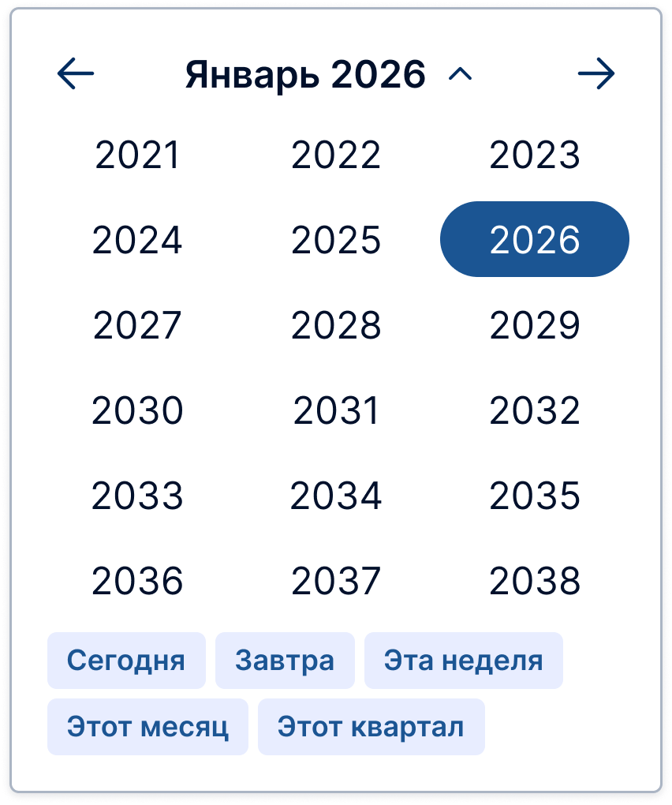
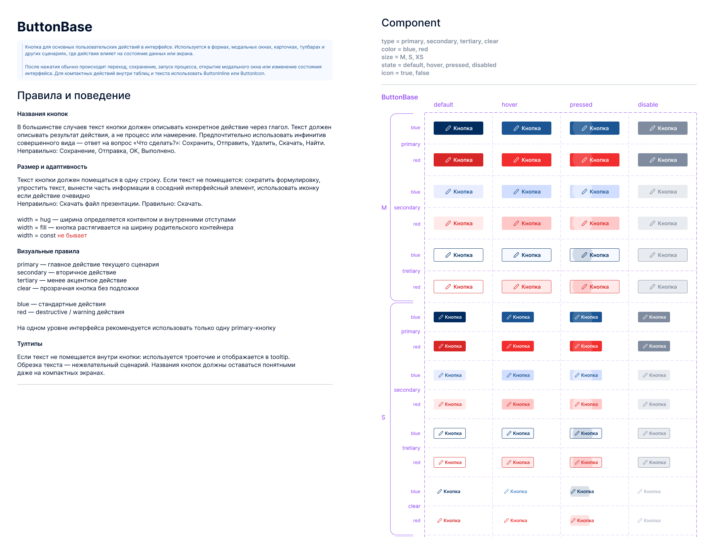
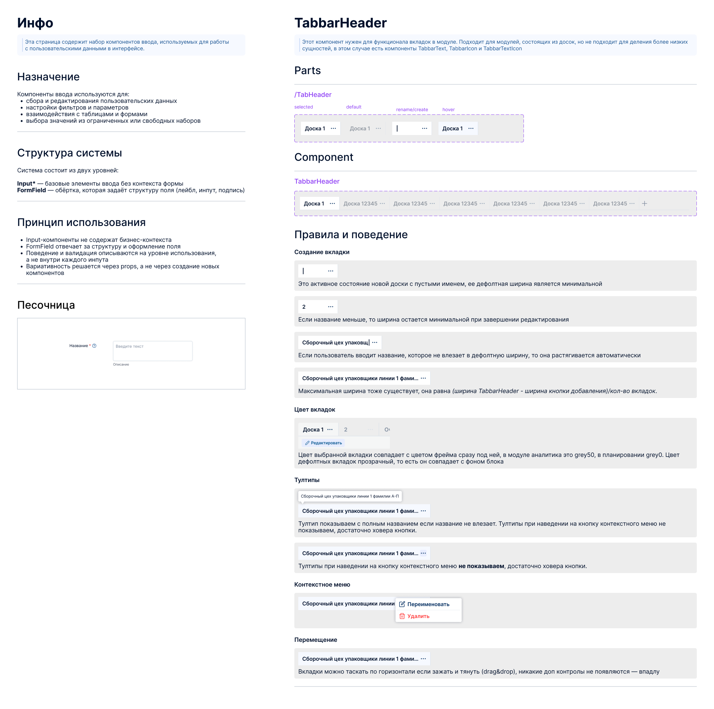
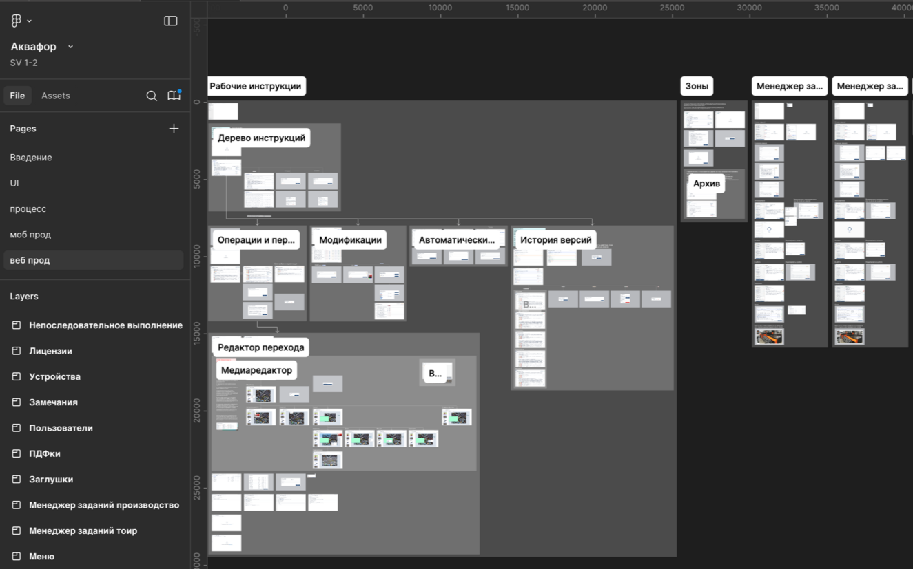
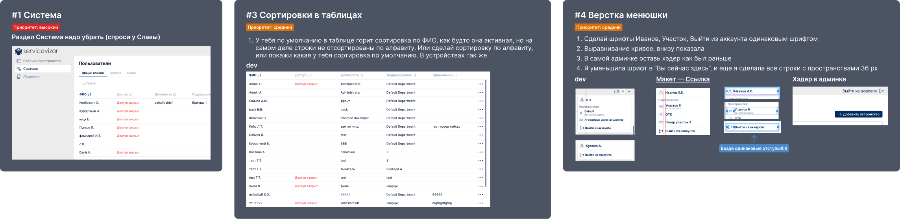

A product design system for technical specialists
How a systematic approach halved post-development revisions and made scaling easier


ServiceVizor is a digital assistant for manufacturing teams.
The product has two connected parts:
- A web service where technical specialists create work instructions, plan and assign tasks, and track progress;
- A mobile app where shop-floor operators complete tasks, answer instruction check questions, and record issues as they work.
This connects office planning with actual work on the shop floor. ServiceVizor aims to reduce errors and improve communication between office and production teams.
In brief
We moved from fragmented interfaces and ad hoc processes to a structured system. I defined layout patterns, tokens, and a component architecture, organized our Figma workspace, and aligned design with development. Post-development revisions fell by half, interfaces became more consistent, and the product became easier to scale.
Problem
The interface had grown in fragments, without shared rules or consistent components. Decisions were often made during development. Designs drifted from the implementation, last-minute changes came with tight deadlines, and developers added third-party or custom elements outside the system. The design system was not guiding the product, while an overloaded, unstructured Figma file made interfaces harder to find and maintain.
Goal
Build a design system that:
— establishes shared interface rules
— aligns design and development
— reduces revisions after development
— scales with the product
— stays flexible
— does not demand excessive resources
Approach
Rules
— defining foundational rules for spacing, corner radii, type styles, icons, and colors
— identifying layouts shared across modules, including form dialogs, tables, and empty states
— moving elements used at least twice into the design system
Components

Specifications

Working with development
Example: date picker
Old version
The original DatePicker came from a third-party library and had several problems:
— no manual date entry
— no distinction between single-date and range selection
— unclear range-selection behavior
New version
I redesigned the component to include:
— manual date entry
— separate selection flows
— hover feedback for ranges, highlighting dates in between
— dynamic presets for today, week, month, and quarter that update automatically
Reorganizing the workspace


I replaced one overloaded file with a modular structure that matches the product architecture.
Blue covers mark web modules and their design system, turquoise covers mark tablet modules and their design system, and red covers mark graphics files.
Process and quality control
To reduce late changes and gaps between design and implementation, I introduced:
— design grooming with developers and explicit edge-case reviews
— a structured issue template with priority, design-versus-build comparison, and problem description
— dedicated review pages in every Figma file
— presentations for weekly demos
— design review before release, tracked in a separate Jira column (shown below)

Outcome
— Post-development revisions fell by half
— Interfaces became more consistent across modules
— More issues were caught during design instead of after release
— Developers created fewer custom components
— Finding and working with designs in Figma became easier
— Design system adoption became a structured process